Organizar Correos con Etiquetas y Filtros en Gmail
Paso 1: Crear una Etiqueta
Abra un correo electrónico existente.
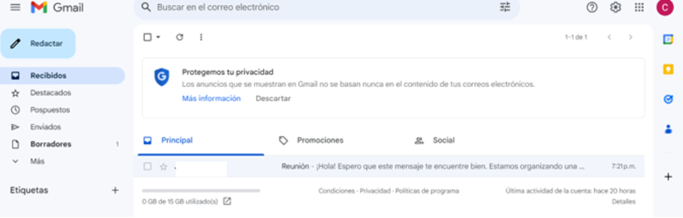
En la barra de herramientas superior, haga clic en el ícono de la etiqueta (etiqueta con forma de etiqueta de papel).
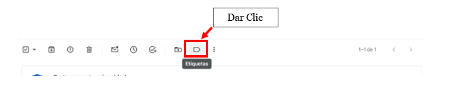
Seleccionará "Crear nueva" y deberá asignar un nombre a la etiqueta. Luego, haga clic en "Crear" para confirmar la creación de la etiqueta.
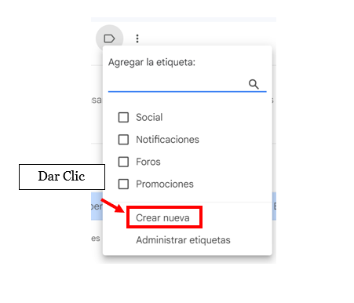
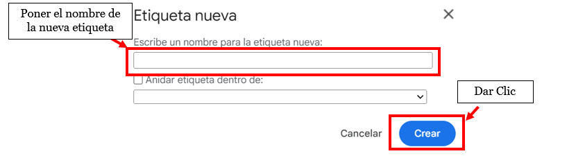
Nota:
Etiquetas: Sirven para organizar y clasificar correos. Es posible aplicar múltiples etiquetas a un solo correo electrónico.
Paso 2: Aplicar una Etiqueta
Con un correo electrónico abierto, haga clic en el ícono de la etiqueta en la parte superior.
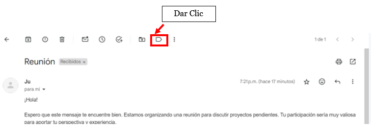
A continuación, seleccione la etiqueta deseada para aplicarla al correo electrónico actual.
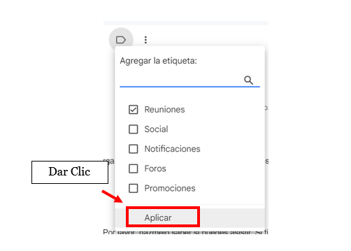
Paso 3: Ver Correos con Etiqueta
En el panel izquierdo, localice y haga clic en la etiqueta que acaba de crear. Esto mostrará todos los correos etiquetados con esa categoría.
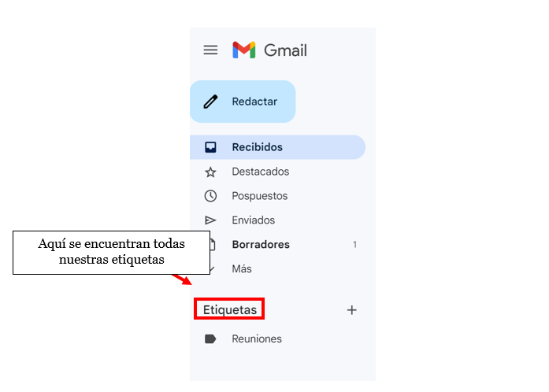
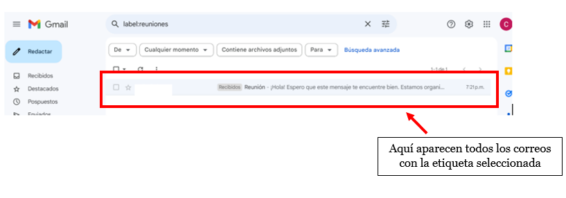
Paso 4: Crear un Filtro
En la esquina superior derecha, haga clic en el ícono de engranaje y seleccione "Ver todos los ajustes".
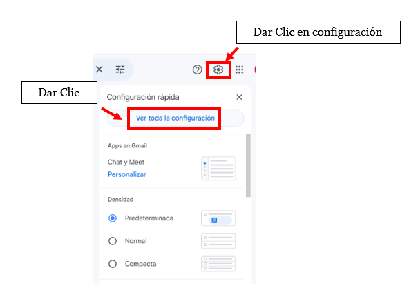
Vaya a la pestaña "Filtros y direcciones bloqueadas".
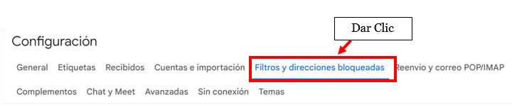
Haga clic en "Crear un nuevo filtro" para comenzar a configurar el filtro.
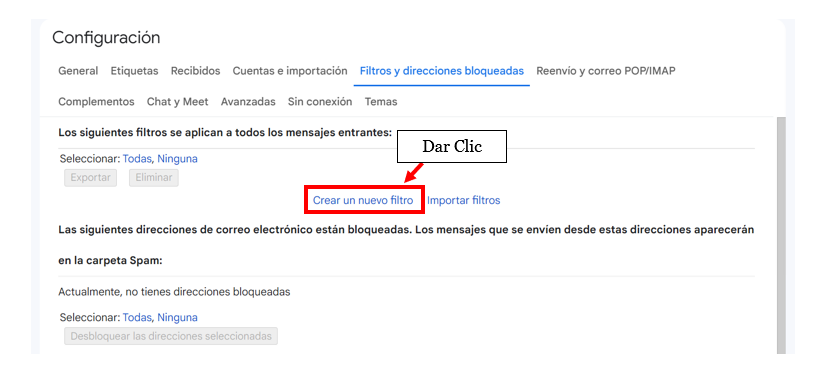
Paso 5: Configurar el Filtro
El usuario deberá ingresar los criterios de filtro, como dirección de correo, asunto o palabras clave.
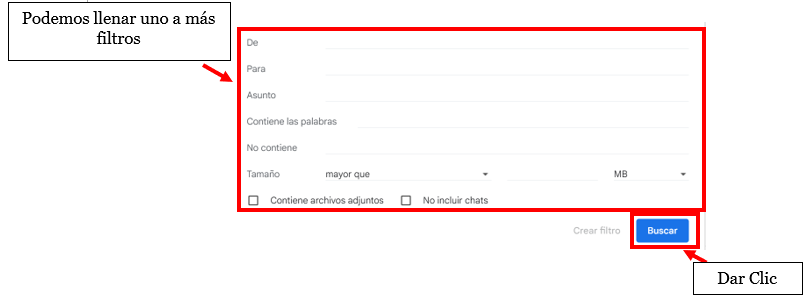
Nota:
Filtros: Automatizan acciones según criterios predefinidos, como aplicar etiquetas, archivar o eliminar correos electrónicos.
Luego, elija las acciones a realizar y haga clic en "Crear filtro".
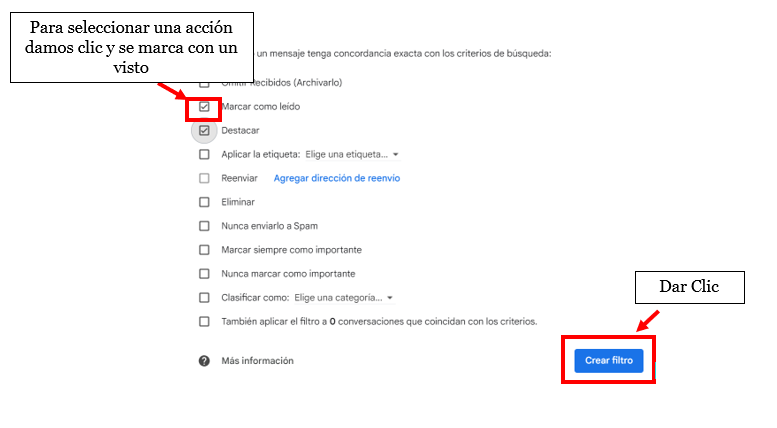